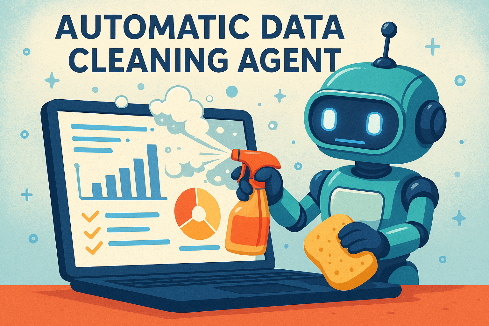

Automated Data Cleaning Agent
Raw datasets need a lot of manual preparation before modeling. This autonomous agent runs a five-phase workflow covering quality assessment, ML-oriented preprocessing and validation gates, and outputs production-ready data.
- Python
- Pandas
- scikit-learn
- NumPy
- Matplotlib
- Seaborn